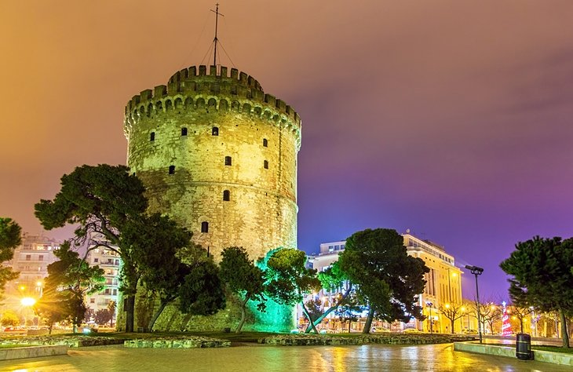

WORLD'S BEST
TOURISTS/DESTINATION SPOT
ASIA
PHILIPPINES
Siargao

Siargao is a place for everyone. Known as the surfing capital of the Philippines, this humble island in Surigao del Norte has lots of
breathtaking natural attractions worth bragging about. From islands and beaches to caves and lagoons, these Siargao tourist spots deserve a spot on
your itinerary.
Dakak

The very popular Dakak Beach is most known for its beautifully shaped cove and powdery white sand, and as a diving mecca in Mindanao.
Pristine blue waters, excellent dive sites with an abundance of coral reefs, and a magnificent sunset horizon characterize this tropical eden. Dakak Park and Beach Resort
boasts 15 hectares of wooded land, a natural reservoir for native plants and animals, and a 750-meter private white-sand beach.
Chocolate Hill
The famed Chocolate Hills of Bohol are not only two but more than 1,268 cone-shaped hills – a very strange geological formation that has
baffled a lot of geologists. The hills are spread over an area of 50 square kilometers or more and vary in size from 30 meters to 120 meters in height.
JAPAN
SAPPORO HOKKAIDO

Located on Japan's northernmost island, Hokkaido, the city of Sapporo offers many things to see and do for tourists. As the island's largest
city, it's a hub of cultural activity, hosting many excellent events and festivals; a distinctive culinary style; a rich theatrical history; and plenty of museums, galleries,
and parks.
FUKUOKA CASTLE AND THE CITY'S ANCIENT FESTIVAL

One of the few surviving examples of the once prolific and majestic hilltop homes preferred by Shoguns and city rulers, Fukuoka Castle
(Fukuoka-jō) is one of the highlights of a visit to Fukuoka. Once part of a massive complex that covered an area of some 47,000 square meters, this beautiful castle still impresses
with its size and its position on a tall foundation overlooking the Naka River.
HISTORIC NARA

For centuries the hub of Japanese culture, the lovely unspoiled city of Nara is home to a large number of historic buildings, along with
important national treasures and works of art. In addition to its many historic streets, the city boasts numerous important old temples, including the magnificent seventh-century
Kofuku-ji Temple, perhaps the best known of the Seven Great Temples of Nara; and the splendid eighth-century Todai-ji (Great East Temple), famous for its huge bronze statue of the
Great Buddha (Daibutsu), cast here in AD 749.
KOREA
BORYEONG MUD FESTIVAL
Once a year on Daecheon Beach, the dirtiest festival in South Korea takes place. The mud at the Annual Boryeong Mud Festival is
believed to have special beautifying mineral properties. Each year it is brought to the beach in truck loads from the nearby Boryeong mud flats.
HALLASAN NATIONAL PARK
Hallasan National Park is home to South Korea’s tallest mountain: Hallasan Mountain. Traditionally, Hallasan Mountain was called Mount
Yeongjusan, meaning ‘the mountain high enough to pull the galaxy’. The park is situated in South Korea’s Jeju Island. There are trails suited to every fitness level snaking around
the area.
NAMISEOM ISLAND
Namiseom Island, part of the larger Gapyeong county, is blanketed in a beautiful natural landscape. It enjoys distinct seasons and is a very
popular destination for domestic tourism. The half-moon island results from the creation of Cheongpyeong Dam, which sectioned off the land from the rest of the river.
AMERICA
CANADA
BANFF NATIONAL PARK AND THE ROCKY MOUNTAINS

Banff National Park lies in the heart of the majestic Rocky Mountains in the province of Alberta, and showcases some of Canada's most
beautiful scenery. Turquoise-colored lakes, snow-capped peaks, and glaciers are all easily accessible in this stunning park.
NIAGARA FALLS

Niagara Falls and the Niagara Gorge have been attracting tourists and daredevils for well over a century. Between the mid-19th and mid-20th
centuries there were numerous attempts to plunge over the falls in various types of homemade boats and barrels. This, along with tightrope walkers and other spectacles, led to the
adjacent town of Niagara Falls developing a carnival type atmosphere that still persists today. Families will enjoy a walk down Niagara's outrageous Clifton Hill leading to the gorge
and falls.
TORONTO'S CN TOWER

On the shores of Lake Ontario in Canada's biggest city is the iconic CN Tower, one of Canada's most famous landmarks. The tower stands an
impressive 553 meters high and dominates the skyline
FLORIDA
ST. AUGUSTINE'S HISTORIC DISTRICT AND THE CASTILLO DE SAN MARCOS NATIONAL MONUMENT

Known for being one of the oldest settlements in Florida, St. Augustine's historical sites and charming old architecture definitely make
it worth a visit. At the top of the list of things to see is the late 19th-century Flagler College, one of the most photographed buildings in the city. It was originally built as
a hotel by railroad magnate Henry Flagler.
EDISON AND FORD WINTER ESTATES
These adjacent, oceanfront mansions in Fort Myers offer a glimpse into the lives and livelihoods of inventor, Thomas Edison, and the
founder of the Ford Motor Company, Henry Ford. You can tour the homes and outbuildings, see where Edison conducted experiments, wander through the palm-lined grounds, and learn
about Edison's famous botanical experiments.
DRY TORTUGAS NATIONAL PARK
Dry Tortugas National Park is home to the impressive Fort Jefferson, built by the US Government in the 1800s. Although this is the key
attraction of the park, the beautiful reef islands, seven in total, that make up the Dry Tortugas are themselves worth the trip. You can tour the fort and spend the rest of the day
enjoying the soft-sand beaches and snorkeling in the clear, shallow waters.
HAWAII
HALEAKALA NATIONAL PARK

Located on Maui, Haleakala National park offers access to the inactive Haleakala Volcano, which stands at over 10,000 feet. Views from the
summit stretch across the entire island and are particularly beautiful at sunrise. The dormant crater is exposed, showing a lunar-like landscape, while other areas of the park are
covered in subtropical rain forests, which are home to endangered species.
HAMAKUA HERITAGE CORRIDOR
This scenic drive along the Hamakua Coast stretches from Hilo to the Waipio Valley Lookout on the Big Island of Hawaii. In addition to
spectacular views of the coast and the region's lush landscape, several top Big Island attractions reside along the way, making this an ideal sightseeing excursion. From Hilo,
tourists take the Onomea Scenic Drive past Onomea Bay and the renowned Hawaii Tropical Garden, which houses more than 2,000 species of tropical plants.
WAIPIO VALLEY LOOKOUT
One of the most scenic spots on the Big Island of Hawaii is the lookout over Waipio Valley. Surrounded by lush cliff walls, the fertile
valley opens out to the ocean, where the black-sand beach is met with white waves and blue water. Hiking in Waipio Valley is considered some of the best in the state, and many of
the trails are suitable for beginners. For an extra special experience, local guides provide horseback riding tours of the valley, allowing you to enjoy the sights from a different
perspective.
EUROPE
GREECE
THESSALONIKI

Overlooking the Aegean Sea in northern Greece, Thessaloniki (Salonica) is the country's second biggest city after Athens. Founded in 316
BC due to its position close to both Bulgaria and Turkey, it has always been a crossroads of various cultures and religions. Its main sightseeing attractions are its UNESCO-listed
Byzantine churches, but there are also several Roman monuments (including the Triumphal Arch of Galerius and the 4th-century Rotunda), the 15th-century White Tower on the seafront,
and an excellent Byzantine Museum.
DELPHI

On the Greek mainland, Delphi is a UNESCO World Heritage site. Built on the lower slopes of Mount Parnassus, overlooking a dramatic ravine,
the site was sacred to the ancients, who came here on pilgrimages to worship Apollo (god of light, prophecy, music, and healing) and to ask advice from the mythical Oracle.
MYKONOS

Greece's most glamorous island destination is Mykonos. After-dark activities center on Mykonos Town, noted for its chic boutique hotels,
classy seafood restaurants, and live music venues. Other attractions include Paraportiani (a whitewashed church in Mykonos Town) and numerous sandy beaches along the island's south
coast (served both by bus and taxi-boat from Mykonos Town).
LONDON
THE TWO TATE'S: TATE BRITAIN AND TATE MODERN
Once collectively known as the Tate Gallery, London's two Tate galleries - Tate Britain and Tate Modern - comprise one of the world's most
important art collections. Opened in 1897 as the basis of a national collection of significant British art, the gallery continued to make acquisitions and needed more space to properly
display its collections. The end result was the establishment of Tate Britain, in Millbank on the north side of the Thames, as home to its permanent collection of historic British
paintings.
TRAFALGAR SQUARE
Two of London's best-known tourist spots, these famous squares lie not far apart and mark the gateways to Soho, London's lively theater and
entertainment district. Trafalgar Square was built to commemorate Lord Horatio Nelson's victory over the French and Spanish at Trafalgar in 1805. Nelson's Column, a 183-foot granite
monument, overlooks the square's fountains and bronze reliefs, which were cast from French cannons. Admiralty Arch, St. Martin-in-the-Fields, and the National Gallery surround the
square.
THE VICTORIA AND ALBERT MUSEUM
The Victoria and Albert Museum (aka the V&A) is part of a South Kensington-based group of museums that includes the Natural History Museum
and Science Museum. Founded in 1852, the V&A covers close to 13 acres and contains 145 galleries spanning some 5,000 years of art and related artifacts. Exhibits include ceramics and
glass, textiles and costumes, silver and jewelry, ironwork, sculpture, prints, and photos.
FRANCE
EIFFEL TOWER
The most visited tourist attraction in Paris, the Eiffel Tower also ranks high on the list of places to visit in France. It's hard to believe
that the structure was dismissed as a monstrosity when it was first unveiled. The iconic tower was designed by Alexandre-Gustave Eiffel for the Paris Exhibition of 1889, which marked the
centenary of the French Revolution.
PLACE DE LA CONCORDE
Created between 1755 and 1775 by the architect of King Louis XV, this impressive octagonal square is at the heart of 18th-century Paris. With
its majestic dimensions, the Place de la Concorde is one of the most attractive squares in the city. It was the scene of several key historical events, including the execution of
King Louis XVI, and it was part of Napoleon's triumphal route.
SEINE RIVER CRUISES
To truly soak up the alluring ambience of Paris, tourists should try taking a boat cruise along the Seine River. Besides being one of the
most enjoyable things to do while visiting the city, Seine River Cruises allow tourists to see the sights from a different perspective. The Seine River bridges, Eiffel Tower, Notre-Dame
Cathedral, and the Louvre Museum look stunning from the viewpoint of a riverboat.